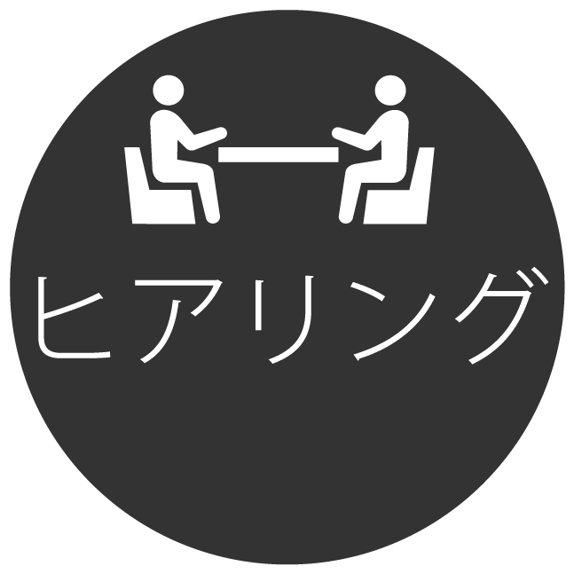

{kind=link}
コントライブ「だしいじんな」
フライヤーデザイン
画像クリックで拡大します。
Overview
知人の所属する劇団「劇団猿博打」のコントライブ「だしいじんな」のフライヤーを作成。
写真撮影、フライヤーデザインを担当。
- 作成物Web上で使用するフライヤーデザイン(表面・裏面)
- 担当箇所写真撮影・デザイン提案・作成
- 作成期間１週間
- 使用ツール一眼レフカメラ・Lightroom・Illustrator
Target
演劇鑑賞をしたことがない若年層
ペルソナ設定
日頃SNSやWebサイトを見て回り、気になった場所へ友人と遊びに行く事が休日の趣味。
使用デバイスはIphoneXで、普段はYoutubeなど動画コンテンツを好んで視聴する。
スマートフォンの使用がメインでパソコンはほとんど使用しない。
comcept
演劇の公演に見に来たことがない人でも興味を抱いてもらえるような
おしゃれな雰囲気のフライヤーデザイン
{kind=link}
{kind=link}
Process
作成フロー
- 


「コントライブの内容をネタバレする事なく、普段演劇を見ない人にも興味を持ってもらえるようおしゃれなフライヤーを作ってほしい」という依頼の元作成開始。
さらに、現在公演に来場されるメイン層は若年層とのことだったのでターゲットも演劇を見に来たことがない若年層をターゲットに設定しました。
こちらのフライヤーデザインにも今回は知名度の向上を狙い役者を直接アピールできる写真を用いたデザインを採用しました。
フライヤーに使用する写真は「楽しい雰囲気が伝わるのが良い」とのことだったのでまずはおしゃれな雰囲気を出すためにはどうすればいいかを検討しました。
結果、ハーバリウムやジュエリーポット、グランピングなどおしゃれな物として紹介されている一覧を見て「ターゲットにとってあまり身近にない物におしゃれや憧れを感じるのではないか」と推測し、今回は三人の距離感や開放感を考えた結果オープンカーを用いて撮影しました。
三人の距離感を近くして笑っている写真を用いることでアットホームな雰囲気や楽しさを表現しています。
{kind=link}
{kind=link}
{kind=link}
撮影後クライアントに使用したい写真を選出していただき、そこから複数案デザインを作成してブラッシュアップを行いました。
{kind=link}
{kind=link}
{kind=link}
{kind=link}
既存の劇のフライヤーデザインは印刷が前提となっていたので一枚の中に情報量が多くなってしまう印象を受けました。
今回のフライヤーはWeb上でのみの使用とのことなので、表裏ともに情報量を少なめにデザインをしました。
これにより、シンプルかつおしゃれな雰囲気が出せるようにしました。
■表面に必要な情報のみを掲載
今回のターゲットは劇を見たことがない人たちなので、情報を多く載せるよりも人物の表情を大きく見せた方が目に止まりやすいと考え、人物の写真とタイトルという最低限の情報のみを掲載しました。
表面では写真や文字を斜めに配置して動きを付けることでスタイリッシュに仕上げました。
■裏面でも役者の存在をアピール
三人の知名度を向上させる狙いもあったので、背景にも三人の写真を使用しました。
顔が写っている写真を背景に使用すると顔に文字が被ってしまい、かつ文字の可視性も下がってしまうデメリットがあったので背景には三人のシルエットの写真を使用しました。
これによって文字の可視性を大きく下げることなく三人を主張する狙いがあります。
お問い合わせ先やチケット予約フォームなどリンク先がある情報については本文で補足したほうが効率的であると考え、この二点は他の文字に対してテキストサイズを小さく設定しました。
{kind=link}
■最重要な情報を目立たせる工夫
既存のイベントなどのポスターを分析すると、タイトル・日時・場所の３つは大きめに、または見やすくアクセントカラーを使用している傾向があったため、今回のフライヤーデザインも注目させたい部分は大きいフォントサイズに設定し、背景には明るい黄色を用いて黄色と黒で目立たせるカラーリングにデザインしました。
また、日時・場所の他に今回はワンコインで楽しめる事ができるので金額も大きめに記載して注目させるようにしました。
{kind=link}
■作成したイメージに合わせたフォント
フォントは「ヒラギノ角ゴ StdN W8」を使用しました。
太く見やすい線幅な事に加え、現在高速道路の案内標識にも使用されており表面の車に乗った写真と共通性が持たせられる点から採用しています。
英数字にも高速道路で用いられているフォントを模した「GD-HighwayGOthicJA-OTF」を使用しています。